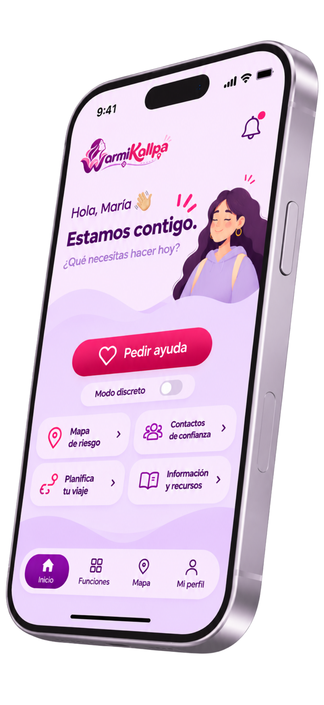
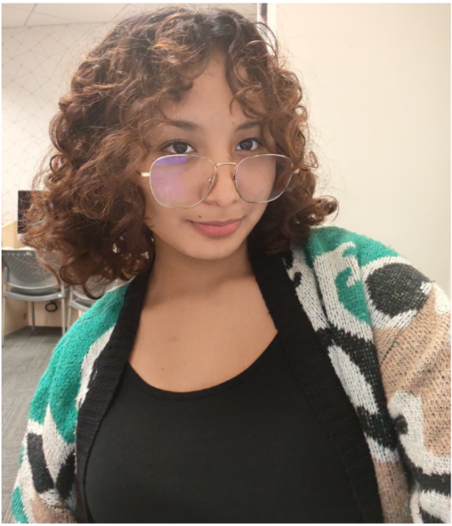

Alerta silenciosa
Una opción discreta para solicitar apoyo sin llamar la atención.
Conocer la demo →Una herramienta que te acompaña durante tus viajes en el transporte público de Lima, brindándote orientación, información y opciones para pedir apoyo.
Tu privacidad y tus decisiones son lo primero.

Herramientas pensadas para acompañarte antes, durante y después de tus viajes.
Una opción discreta para solicitar apoyo sin llamar la atención.
Conocer la demo →Consulta información de zonas y reportes para conocer mejor tu recorrido.
Explorar mapa →Elige con quién compartir tus viajes y qué información deseas compartir.
Cómo funciona →Encuentra información sobre canales de atención, derechos y pasos a seguir.
Ver orientación →Consulta información colaborativa sobre reportes por zona, horarios y estaciones. Los datos son orientativos y no predicen lo que ocurrirá durante un viaje.
La información del mapa es referencial y depende de los reportes disponibles.
Todavía no has seleccionado una ubicación.
Cada persona vive sus trayectos de manera distinta. Por eso, WarmiKallpa reúne herramientas de orientación y acompañamiento que puedes utilizar según tus necesidades.
Tú decides cuándo compartir tu recorrido, qué información consultar y a quién acudir.
Explorar la experiencia →Explora una demostración de algunas funciones y descubre cómo se vería la experiencia dentro de la aplicación.
Si necesitas apoyo, puedes conocer cómo se presenta esta función.
Esta demostración no envía alertas reales ni contacta servicios de emergencia.
Somos un equipo multidisciplinario que combina conocimientos, creatividad y compromiso para desarrollar WarmiKallpa, una propuesta tecnológica enfocada en la orientación, prevención y acompañamiento de las mujeres.

Team LeaderIngeniería de Sistemas de Información
Lidera la planificación y coordinación del equipo, supervisando los avances y la integración de los entregables. Participa activamente en el diseño de la solución, la revisión y consolidación del informe, así como en el desarrollo de la propuesta web.
Ingeniería de Sistemas de Información
Contribuye al análisis de las necesidades de los usuarios y a la definición de propuestas que favorezcan una experiencia intuitiva. Participa en la organización de información y en la construcción de los entregables del proyecto.
Ingeniería de Software
Aporta conocimientos técnicos para evaluar alternativas de implementación y estructurar las funcionalidades de la plataforma. Contribuye al análisis de viabilidad y a la construcción de la solución tecnológica.
Ingeniería de Sistemas de Información
Participa en la organización de los componentes de la propuesta y en el desarrollo de la experiencia de usuario. Contribuye a mantener la coherencia entre las necesidades identificadas, los flujos y las funcionalidades planteadas.
Ingeniería de Software
Contribuye al análisis y desarrollo de los componentes tecnológicos de WarmiKallpa. Participa en la revisión de funcionalidades, la organización de recursos y la evaluación de alternativas para mejorar la plataforma.
Cinco perspectivas, un mismo propósito: construir una experiencia que acompañe y brinde orientación.